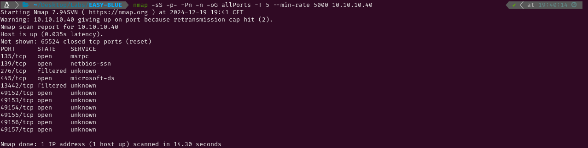

EASY-BLUE
1. Recon
Nmap
nmap finds nine open ports: RPC (135), NetBios (139), SMB (445) and six unknown services.

The NSE (Nmap Scripting Engine) finds the following information:
- The box is using Windows 7 Professional 6.1
- The Microsoft RPC service is running on ports 135, 49152, 49153, 49154, 49155, 49156, 49157
- The computer name and NetBios name are haris-pc and HRIS-PC\x00 respectively

SMB - TCP 445
As the running OS is Windows 7, the first thing to be checked is if it is vulnerable to EternalBlue. I will use nmap to look for vulnerabilities in the SMB service. After a few moments the results are ready and I can see that this service is vulnerable to ms17-010 (EternalBlue)

2. Gaining Access
To exploit this vulnerability I always like using the tools in this Github repository. Running the checker will confirm that the service is vulnerable as there is one or more OK’s.

To exploit it, I will modify the zzz_exploit.py file adding guest in the username field, commenting the pwned.txt file creation and uncommenting the service_exec line. I will also modify that line to make the target connect to a smb share I will be hosting and which will contain a reverse.exe(which is a copy of nc64.exe from netcat) file which will make the target send a reverse shell to the netcat listener I will set up before running the exploit.

Setting up a smb server with impacket, a netcat listener, and then run the exploit, will result in the spawn of a shell with root permissions in the netcat listener.